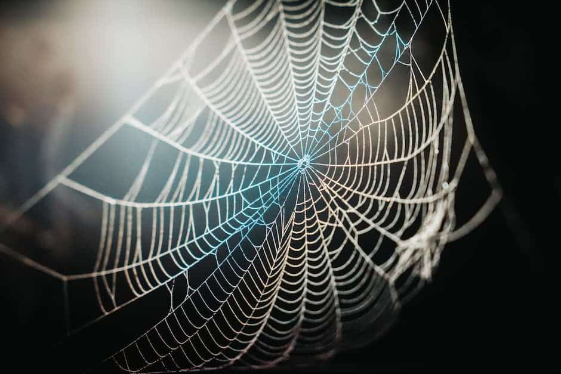
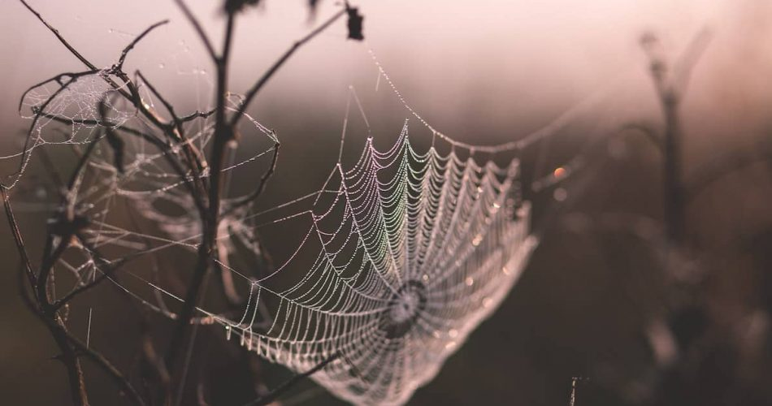

¿Cómo hacen las arañas su telaraña?
Las telas de araña se forman a partir de la seda de araña que las arañas biosintetizan y secretan a través de sus glándulas de hilado, en la parte posterior del abdomen. Las especies más primitivas de araña poseen pocas glándulas y por lo tanto sintetizan sedas muy similares en todos los casos.
¿Pero nunca te has preguntado...?
¿Que tan fuerte es una telaraña?
Por su parte, señalaron que la rigidez de la tela sería de 3,12 gigapascales. Un dato muy razonable para las telas de arañas tejedoras, cuya resistencia va de 1,5 a 12 gigapascales
 